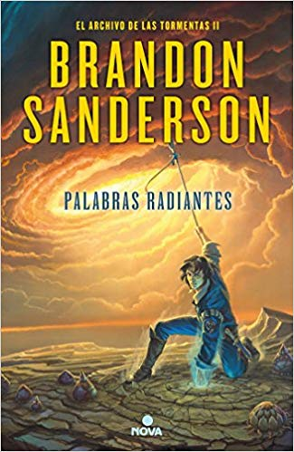
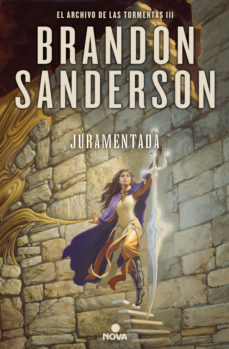
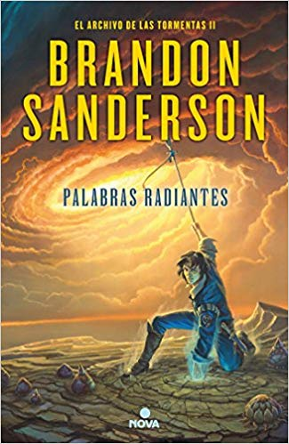
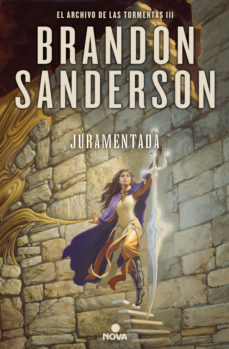

En Roshar, un mundo de piedra y tormentas, extrañas tempestades de increíble potencia barren el rocoso territorio
de tal manera que han dado forma a una nueva civilización escondida. Han pasado siglos desde la caída de las diez órdenes
consagradas conocidas como los Caballeros Radiantes, pero sus espadas y armaduras aún permanecen. En las Llanuras Quebradas
se libra una guerra sin sentido. Kaladin ha sido sometido a la esclavitud, mientras diez ejércitos luchan por separado
contra un solo enemigo. El comandante de uno de los otros ejércitos, el señor Dalinar, se siente fascinado por un antiguo
texto llamado El camino de los reyes. Mientras tanto, al otro lado del océano, su eminente y hereje sobrina, Jasnah Kholin
forma a su discípula, la joven Shallan, quien investigará los secretos de los Caballeros Radiantes y la verdadera causa
de la guerra.
 



Esta saga de libros fue escrita por el escritor Brandon Sanderson,esta saga pertecene a un universo ficticio creado por el llamado Cosmere, Esta saga sera una decalogia, Segun el propio escritor es su saga magna, en la actualidad solo estan escritos 3 libros. Sipnosis de Palabras radiantes: En ella retrocedemos seis años en el tiempo, cuando un asesino, entre cuyos primeros objetivos se halla Dalinar, mata al rey alezi. Kaladin está al mando de los guardaespaldas reales, un puesto controvertido por su baja condición, y debe proteger al rey y a Dalinar, y al mismo tiempo dominar, en secreto, los nuevos y extraordinarios poderes vinculados a sus honorspren. Shallan tiene la misión de impedir el fin de las Desolaciones. Las Llanuras Quebradas poseen la respuesta; en ellas los parshendi están convencidos, gracias a su líder, de arriesgarlo todo en una apuesta desesperada...
Sipnopsis de Juramentada , tercer libro de la saga: La humanidad se enfrenta a una nueva Desolación con el regreso de los Portadores del Vacío, un enemigo tan grande en número como en sed de venganza. La victoria fugaz de los ejércitos alezi de Dalinar Kholin ha tenido consecuencias: el enemigo parshendi ha convocado la violenta tormenta eterna, que arrasa el mundo y hace que los hasta ahora pacíficos parshmenios descubran con horror que llevan un milenio esclavizados por los humanos. Al mismo tiempo, en una desesperada huida para alertar a su familia de la amenaza, Kaladin se pregunta si la repentina ira de los parshmenios está justificada.